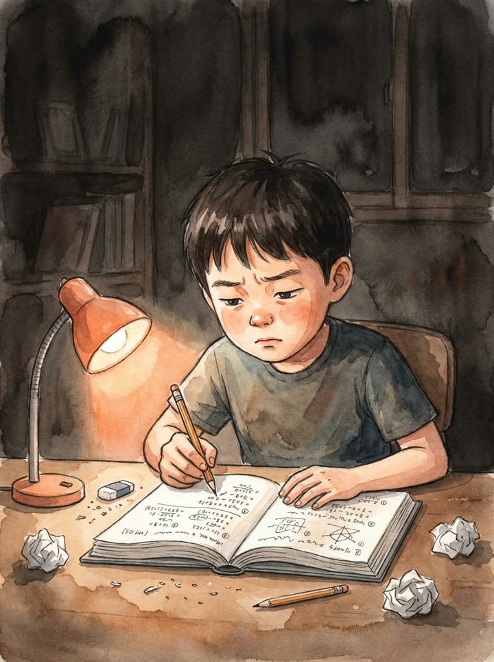
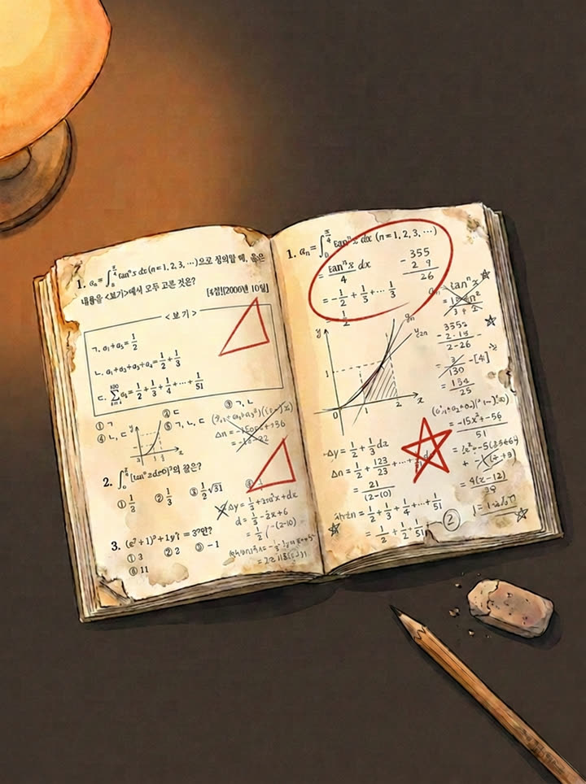
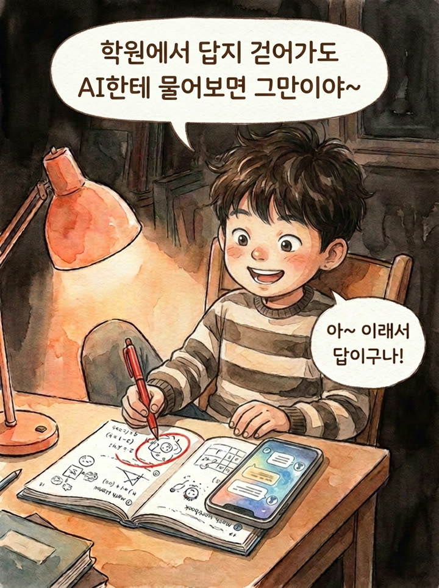
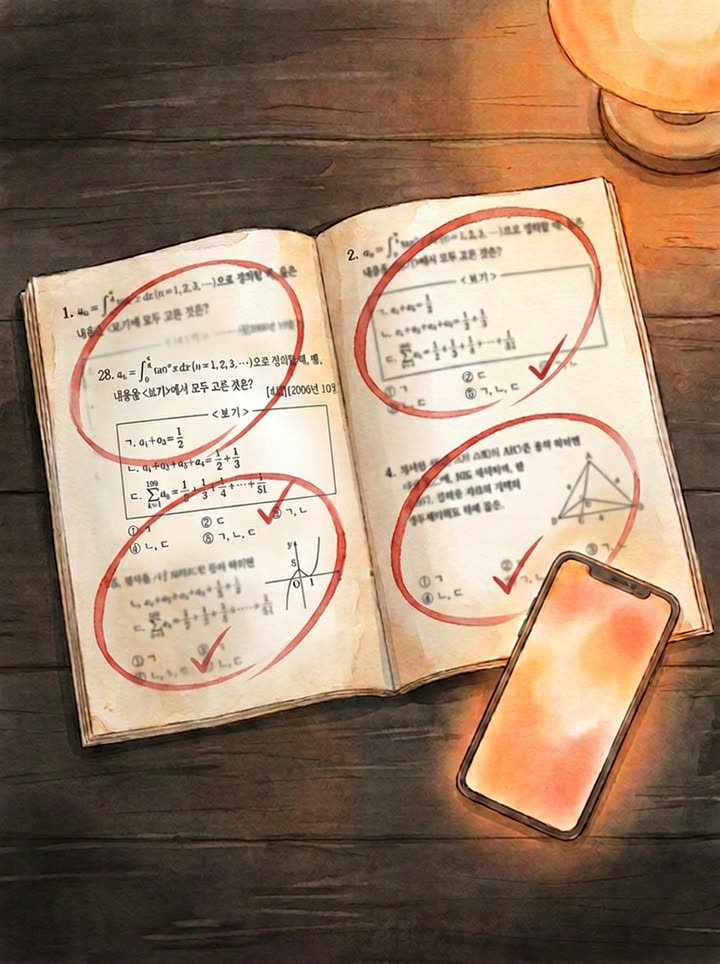

01 — STORY
한 어머니에게
두 아들이 있습니다.
누가 더 수학을 잘하는 학생일까요?


밤새 연필로 빼곡하게 풉니다.
문제집엔 X와 세모가 가득합니다.
VS


“학원에서 답지 걷어가도 AI한테 물어보면 그만이야~”
문제집은 전부 동그라미입니다.
채점만 보면 답은 분명합니다. 그러나 그 동그라미를 그린 것은 수민이가 아니라 AI였습니다. 준서의 세모 옆에는 지우고 다시 쓴 자국이 남았습니다. 끈기는 그 자국 위에 쌓입니다. 그리고 시험장에는, 둘 다 혼자 앉습니다.